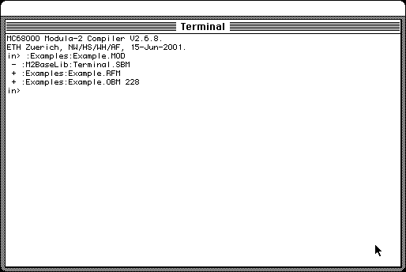

Download
MacMETH_3.2.8.zip (987K) MacMETH 3.2.8 repackaged into a zipped hfs disk image and checksum file. The disk image can be mounted with Mini vMac.
MacMETH_3.2.8.sea.bin (1.1M) MacMETH 3.2.8 in the original format.
copyright: Systems Ecology
mod date: Mar 11, 2004
license: free for non-commercial use
from url :
RAMSES - Detailed Download Page
"Modula-2 Language System"

If you find these downloads useful, please consider helping the Gryphel Project, which hosts them.
Here are the md5 checksums for the downloads, signed with Gryphel Key 5:
--------- GRY SIGNED TEXT --------- 894d8e61c721936f6d1d2cd92e942a43 MacMETH_3.2.8.zip c614f980c08ce505f84b9366aa6afd8a MacMETH_3.2.8.sea.bin ------- BEGIN GRY SIGNATURE ------- Gry/4Xa8CFcUzxdN/Hz8I1Ge0zlSJ5diVuu/4bv48E/Onx86GsbWN97yWbSU4DJC r3CzdzELr8Mx/Oz4WLMWuvlRm87sbc6DRRWlWzrq4K15iSb3VPmdo/GjBxP6t5LV 7Ja/kB0bCna5PfwtiYEJ8yqzAGzMFdRwKjOnB+cgTPACbbcCmOWvVb4g/7op167K -------- END GRY SIGNATURE --------